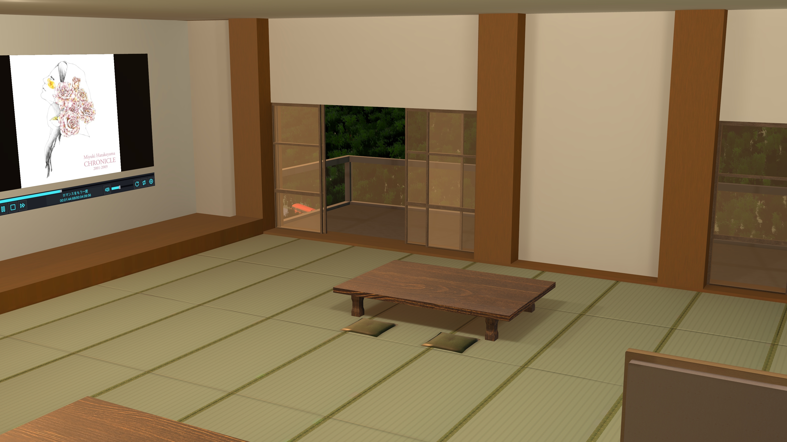
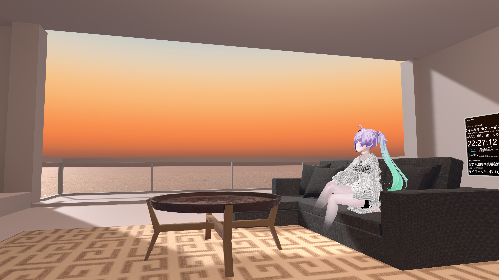
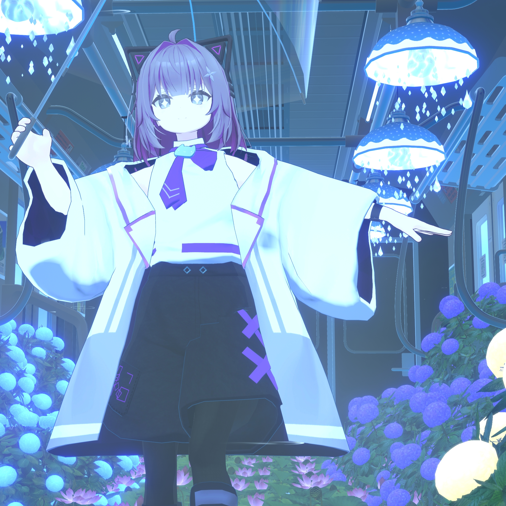
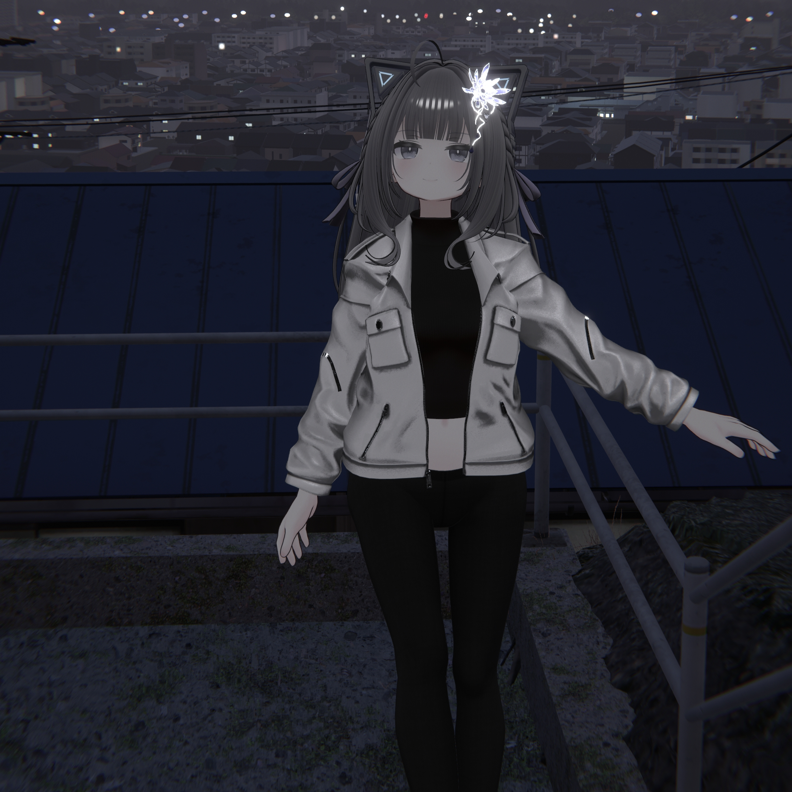
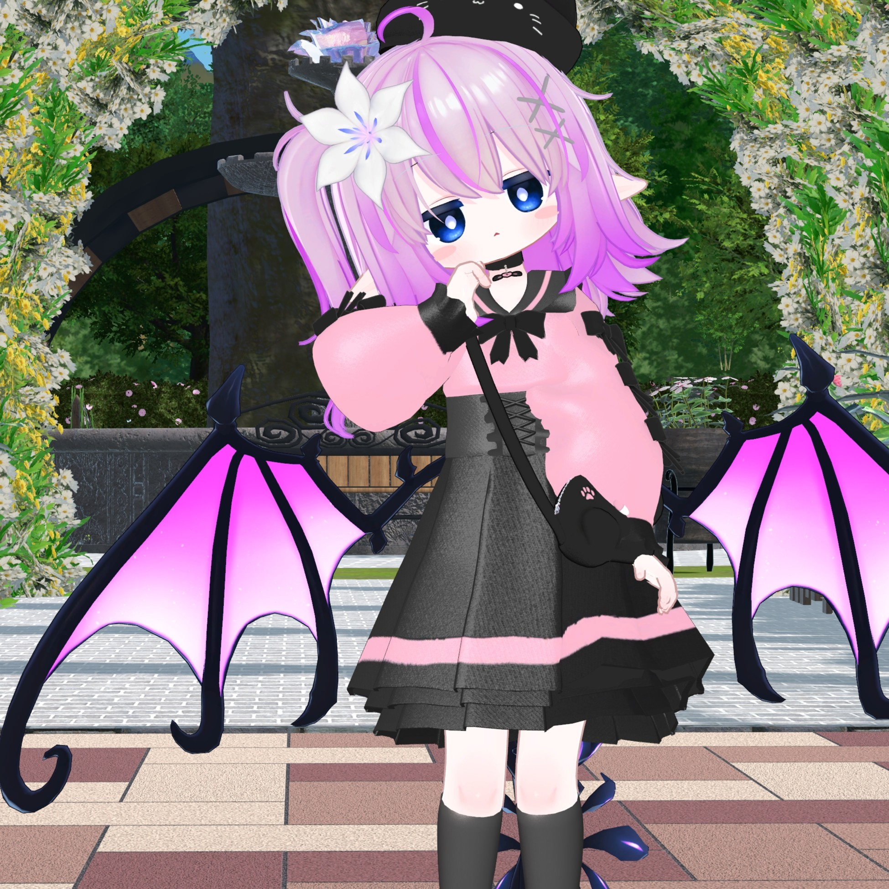
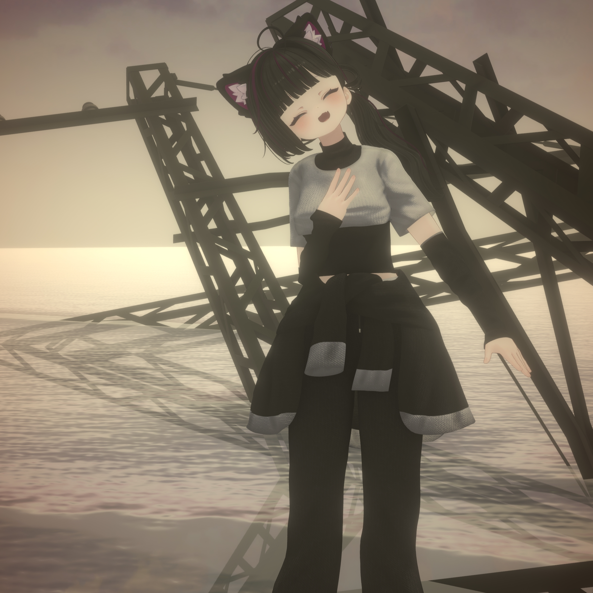

Sunset Inn ～ロマンスをもう一度～
夕暮れの旅館を思わせるようなチルワールドです。外からロマンスを連れてくる音がするところがお気に入りポイント。
特段普段は何をしているでもなく、フレンドと仲良く過ごしています。たまに何か作ったり、noteを書いたりしてます。
つくったワールドを紹介します。

夕暮れの旅館を思わせるようなチルワールドです。外からロマンスを連れてくる音がするところがお気に入りポイント。

フレンドがみんなSlay the Spire 2で遊んでいて暇になったので作りました。3DモデルはSunset Innと同じだったりします。内装はだいぶ違うけどね。
普段使っているアバターを紹介します。

普段から使っているアバターです。どこでも見かけるので最もなじみ深いアバターだと思います。初めて買ったアバターでもあるので最も思い入れがあります。

普段のホノカちゃんとは違った雰囲気にしたいと思って別世界線風で改変したもの。同じアバターってだけで全然別人格のように考えています。

ちっちゃいアバターも欲しいなと考えていた矢先に発売されたのでお迎えしました。ジャンプコライダーなどの便利な機能があるのでたまに使っています。

こまどアバターは持ってても損しないんじゃない？と言われて、アンケートとルーレットの結果Chocolatに決定し、お迎えしました。中身がクソガキなのに見た目も...？となってしまっているので使用頻度は低め。

セールしてるなって思ってたらなぜか手元に出てきた。ほんとに買った瞬間のことを覚えていない。でもホノカちゃんの次によく使っているので見たことある人も多いはず。